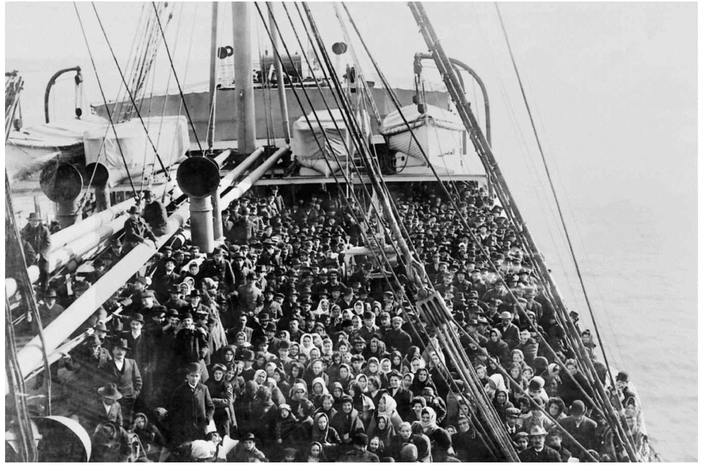
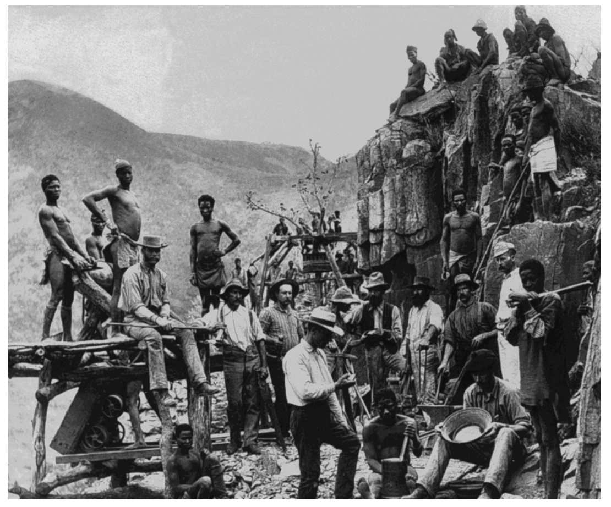

较早的帝国的欧化
1763年以前的那一时期中，欧洲诸强国仅在亚洲和非洲拥有少数立足点，它们主要的占有地是美洲。1763年之后，它们从政治上控制了亚洲的大部分地区和几乎整个非洲。不过，在美洲和英国自治领，它们所能做到的比这要多得多。趁着当地人口比较稀少，成百万的欧洲人移居过去，并填补了那些相对空旷的地区。
图186 《贝列里一家》。家庭是中产阶级概念中一个稳定的、受人尊重的社会生活的中心。这幅描绘贝列里（德加的舅舅）一家的油画是法国印象派画家德加的作品。注意：画中作为丈夫和父亲的男人坐在桌前的椅子上，表明他与事业和家外世界的联系；而作为妻子和母亲的女人则带着孩子们站在那里，表明她家庭主妇的角色。
工业革命在很大程度上是造成这一大批移民的主要原因。我们已经看到，生产率的提高和医学的进步导致19世纪欧洲人口急剧增加。由此带来的人口压力是通过海外移民寻找出路的。铁路和汽船有效地将大批大批的人运过海洋和大陆，而种种迫害更是进一步促进了迁移，正如爱尔兰的土豆饥荒所造成的自然灾害那样。这种种因素合在一起，导致了一场史无前例的大规模移民。每过去10年，人口迁移的潮流便有巨大的增长。19世纪20年代中，总共才有14.5万人离开欧洲，19世纪50年代中，有大约260万人离开欧洲，而在1900年至1910年间，移民人数高达900万，也就是每年有近100万移民（见地图25）。
1885年以前，大部分移民来自北欧和西欧，那时以后，多数移民来自南欧和东欧。一般说来，英国移民前往英帝国的自治领和美国；意大利人前往美国和拉丁美洲；西班牙人和葡萄牙人前往拉丁美洲；德国人前往美国，其中还有小部分前往阿根廷和巴西。从世界历史的观点来看，这种规模极其巨大的迁移的意义在于：除很大一部分人涌入亚洲的俄国地区和一小部分人慢慢流入南非外，迁移的目标完全是针对美洲和大洋洲的。结果，西伯利亚、南非除外的英国自治领和美洲在种族方面几乎完全欧化。虽然拉丁美洲的印第安居民仍然存在，但幸存下来的只是少数。

图187 1906年，欧洲移民在去往美国的路上。在1846年至1932年间，5000多万欧洲人移居美国、加拿大、南美洲、澳大利亚和南非。
海外领地种族上的欧化还不可避免地导致了政治、经济和文化欧化。这一进程将在第三十五章中予以描述。
新帝国主义征服新帝国
工业革命不仅是海外领地被欧化的主要原因，也是欧洲庞大的殖民地结构在亚洲和非洲得以建立的主要原因。1870年以后出现的营建帝国的巨大浪潮被称为“新帝国主义”，它使地球上的很大一部分地区都成为欧洲少数强国的附属物。殖民地可以作为数量日益增多的制成品市场；从攫取殖民地的不断增长的欲望中，可以看出新帝国主义与工业革命之间的密切联系。19世纪期间开始工业化的几个欧洲国家和海外国家很快就在互相争夺市场，并在这一过程中，提高各自的关税，以抵制别国的产品。不久，有人主张，每个工业化国家都应当拥有能够为其制造商提供“不受外国竞争影响的市场”的殖民地。
工业革命还产生了剩余资本，剩余资本又致使各强国去寻找殖民地作为其投资场所。资本在国内积累得愈多，利润降得愈低，对国外更有利可图的投资市场的需要也就愈大。实际上，各强国，尤其是英国、法国和德国，对外国进行了大量的投资。例如英国，到1914年，已在国外投资了40亿英镑，等于其国民财富总数的四分之一。到1914年，欧洲已成为世界的银行家。在19世纪上半叶，这些海外投资的大部分是在美洲和澳大利亚——在白人的世界。但是，在19世纪下半叶，这些海外投资多半是在亚洲和非洲的那些非白人的、相对不稳定的国家。提供资本的成千上万个私人小储蓄者和一些大的金融组织自然会为其资本的安全而担忧。他们宁愿在其投资所在的地区出现“文明的”行政管理，而且这种管理最好是由他们各自的政府来进行。如此，投入剩余资本的需要也就促进了新帝国主义的发展。
工业革命还引起了对供给机器用的原料的需求。这些原料——黄麻、橡胶、石油和各种金属——大都来自世界“未开化的”地区。在多数情况下，要充分地生产这些物品，就需要有大量的资本支出。这种投资如我们已经知道的那样，通常导致政治控制的强加。
新帝国主义的起源并不完全是经济性的，它也并不仅仅与工业革命有关。当时，还有其他种种因素在起作用。一个因素是，希望得到像在马耳他和新加坡那样的海军战略基地以加强国家安全。另一因素是，需要获得另外的人力来源，就如法国人在北非所做的那样。再一个因素是传教士的影响，他们在19世纪中特别活跃。这些传教士一直试图使土著皈依，他们有时受到土著的虐待，甚至被杀。虽然传教士本身为了自己的事业起见，也许乐于容忍这样的危险，但是，舆论时常要求反击。因此，政府知道，可以利用这类事件作为进行军事干涉的借口。最后，社会达尔文主义及其生存斗争和适者生存的学说的流行，自然会导致种族优势的观念和白人有“责任”统治世界上诸“劣等的”有色民族的观念。杰出的帝国创立者塞西尔·罗兹在这一问题上是十分坦率的。他说：“我坚持认为，我们是世界上第一流的种族；在这个世界上，我们定居的地方愈多，对人类就愈有利……如果有上帝的话，我想，他希望我做的是，在非洲地图上尽可能多地绘上英国的红色。”[8]
这些经济、政治和智力心理上的因素的最后结果，是导致世界历史上规模最大的土地攫取，这种土地攫取甚至是成吉思汗的征服都无法与之相比的。在1871年至1900年的30年间，英国使其帝国的土地增加了425万平方英里、人口增加了6600万；法国使其土地增加350万平方英里、人口增加2600万；俄国在亚洲增加了50万平方英里土地和650万人口；德国增加了100万平方英里土地和1300万人口。甚至小小的比利时也设法获得了90万平方英里土地和850万居民。正是通过这种方式，到1914年，地球上大部分表面和世界上大部分人口已受到包括俄国在内的欧洲少数国家和美国的直接或间接的支配。这一发展是人类历史上前所未有的。在20世纪后期，世界上的大部分混乱都是对这种欧洲霸权的不可避免的反应。
新帝国主义的影响
为什么欧洲在19世纪后期的大扩张被称为新帝国主义呢？帝国主义毕竟不是什么新的东西。如果将帝国主义定义为是“一个国家、民族或种族对其他类似的集团进行直接或间接的、政治或经济的统治或控制”，那么，帝国主义就同人类文明一样古老。[9]无疑，罗马人是帝国主义的，因为他们征服了欧洲的大部分地区和近东，并统治那些地区达数世纪之久。而且，在罗马人之前和之后，世界各地还有许多别的帝国为各种民族所征服。
然而，“新帝国主义”一词是颇有道理的，因为这种19世纪后期的欧洲扩张就其对殖民地和附属地的影响而言，完全是前所未有的。虽然罗马通过掠夺、收集主要以粮食为主要形式的贡物，简单、直接地剥削其殖民地，但是，它的剥削并未特别地影响殖民地的经济生活和结构。殖民地继续以与过去同样的方式生产几乎同样的粮食和手工艺品。将这种帝国主义与后来侵扰并改造整块整块大陆的那种帝国主义相比，就像将一把铲子与一台蒸汽挖掘机相比。传统的帝国主义包含剥削，但不包含根本的经济变化和社会变化。贡物仅仅归于某一统治集团而不归于另一统治集团。相形之下，新帝国主义迫使被征服国家发生彻底的改变。这与其说是一种经过深思熟虑的政策，不如说是西欧生气勃勃的工业主义对非洲和亚洲静止的、自给自足的农业政权的不可避免的影响。换句话说，欧洲的工业资本主义太复杂、太富于扩张性，不能说它与殖民地是一种简单的贡物关系。
开始时，欧洲征服者肯定会毫不迟疑地掠夺和征收贡物。英国人在印度就曾这样做过，就像西班牙人早先在墨西哥和秘鲁所做的那样。但是，经过这一最初的阶段之后，欧洲的生气勃勃的经济就开始以各种方式包围和改变殖民地的经济结构和社会结构。发生这种情况是因为如我们已知道的那样，工业化的欧洲需要为它的剩余资本和制造品寻找原料来源和市场。因此，新帝国主义的历史作用在于将工业革命推进到其逻辑上必然的结局——使工业国家即工业资本主义能以世界性的规模发挥作用。工业资本主义的全球作用导致了对世界人力物力资源的更为广泛、协调和有效的利用。当欧洲的资本和技术与不发达地区的原料和劳动力相结合、首次导致一个完整的世界经济时，世界生产率无疑极大地提高了。事实上，世界工业生产在1860年至1890年间增加了3倍，在1860年至1913年间增加了7倍。世界贸易的价值从1851年的6.41亿英镑上升到1880年的30.24亿英镑、1900年的40.25亿英镑和1913年的78.4亿英镑。
对于经济这块蛋糕增大所带来的好处，人们的意见是一致的。但是，争论主要集中在蛋糕该如何分配的问题上。诸殖民地民族已经感觉到，过去，他们所得到的少于他们应得的份额。不过他们所得到的总量已明显增加，要不然，他们日渐增长的人口就无法得到供养。例如，有位英国经济学家指出，1949年，在矿物丰富的北罗得西亚（今赞比亚）从事开矿的欧洲公司将其产品总共卖得3670万英镑。这笔钱中，花费在北罗得西亚的仅为1250万英镑；这意味着，近三分之二的资金被转移到国外。而且，花费在北罗得西亚的1250万英镑中，还有410万英镑是支付给在那里生活、工作的欧洲人的。3670万英镑中，只有200万英镑是给了在矿井里干活的非洲人。这些工人平均一年得到41英镑，而殖民地的每个成年非洲人的平均年收入则是27英镑。[10]

图188 欧洲人开发非洲。照片拍的是南非一家金矿公司的白人工头和黑人劳工。
在这些情况下，可以理解，诸殖民地民族对增长了的生产率或外国公司支付的工资，印象并不很深。他们印象较深的是自己的可怜的生活水平，尤其是在与西方的生活水平相比较时。他们对于让自己担任伐木工和抽水工等苦力的角色也很不满，甚至在有着工业发展所需的人力物力资源的地区，也是如此。
显然，在西方工人对工业资本主义的反应与殖民地民族对新帝国主义的反应之间，有着一个相似之处。两者都对自己的命运不满，而且，两者都支持旨在引起根本变革的运动。但是，它们又有一个基本差别：诸殖民地民族并不反对本民族的雇主，而宁可反对外国统治者。因此，至少在最初阶段，它们的反对运动并不是社会主义的，而是西方的一系列政治学说——自由主义、民主主义，尤其是民族主义的。
我们接下来将考察这些主义，它们构成了欧洲的政治革命。对世界历史来说，了解这一革命与了解工业革命一样，是必不可少的。正如我们将要看到的，这个世界不仅受西方的棉织品、铁路和银行的影响，而且还受西方的思想、口号和政治制度的影响。
[推荐读物]
M. Boas所著的History of Science（Service Center for Teachers of History，1958）的第十三卷列出了关于科学革命的优秀参考书目。概括整个科学史的好的平装本著作都可用，特别是W. C. Dampier所著的A Shorter History of Science（Harcourt Brace Jovanovich出版社，1957）；A. R.和M. B. Hall合著的A Brief History of Science（New American Library出版社，1964）和F. S. Taylor所著的A Short History of Science and Scientific Thought（W. W. Norton出版社，1949）。W. C. Dampier Whetham和M.Dampier所著的Cambridge Readings in the Literature of Science（Cambridge University出版社，1928）也是一本有用的书。
E. E. Lampard所著的Industrial Revolution：Interpretations and Perspectives（Service Center for Teachers of History，1957）第四卷适当地分析了有关工业革命的解释和文献。最全面地概括这一问题的著作是D. S. Landes所著的The Unbound Prometheus：Technological Change and Industrial Development in Western Europe from 1750 to the Present（Cambridge University出版社，1969）。还有A. Thompson令人鼓舞的阐释The Dynamics of the Industrial Revolution（Edward Arnold出版社，1973）。关于工业革命从英国的传播，见W. D. Henderson所著的The Industrial Revolution on the Continent（Cass出版社，1961）。关于工业革命的社会和政治影响，见E. J. Hobshawn所著的The Age of Revolution：Europe，1789-1848（Weidenfeld出版社，1962）；E. P. Thompson所著的The Making of the English Working Class（Gollancz出版社，1963），T. McKeowan所著的The Modern Rise of Population（Academic出版社，1977），N. McKendrick等人所著的The Birth of a Consumer Society：The Commercialization of Eighteenth-Century England（Indiana University出版社，1982）；L. Brockway所著的Science and Colonial Expansion（Academic出版社，1979）；D. R. Headrick所著的The Tools of Empire：Technology and European Imperialism in the 19th Century（Oxford University出版社，1981）和H. Magdoff所著的Imperialism from the Colonial Age to the Present（Monthly Review出版社，1978）。
R. Bridenthal和C. Koonz所编的Becoming Visible：Women in European History（Houghton Mifflin出版社，1977）第11章到14章总结了工业革命对女性的影响。更详细地论述这一点的著作有：L. A. Tilly和J. W. Scott所著的Women Work and Family（Holt，Rinehart and Winston出版社，1978）；E. S. Riemer 和J. C. Fout 所编的European Women：A Documentary History，1789-1945（Schocken出版社，1980）和J. Rendall所著的The Origins of Modern Feminism：Women in Britain，France and the United States，1780-1860（Macmillan出版社，1985）。
[注释]
[1]T.Sprat, The History of the Royal Society of London，for Improving of General Knowledge（London，1734）, p. 72.
[2]Siderius nuncius, trans. E. S. Carolos（1880）. Cited by M.Nicolson, Science and Imagination（Cornell University，1956）, p. 15.
[3]Charles Darwin, Origin of Species, Vol. I（New York，1872）, p. 3.
[4]H. Butterfield, The Origins of Modern Science, 1300-1800（Bell，1957）, p. 179.
[5]Cited by L. Huberman, We，the People, rev. ed.（Harper & Row，1947）, p. 218.
[6]L. R. Brown, Vital Signs 1996（W.W.Norton，1996）, p. 74.
[7]Cited by N. McKendrick, The Birth of a Consumer Society（Indiana University，1982）, p. 98.
[8]Cited by Huberman, We，the People, p. 263.
[9]Definition from W. L. Langer, Diplomacy of Imperialism 1890-1902，2nd ed.（Knopf，1935）, p. 67.
[10]P. Deane, Colonial Social Accounting（Cambridge University，1953）, p. 37.